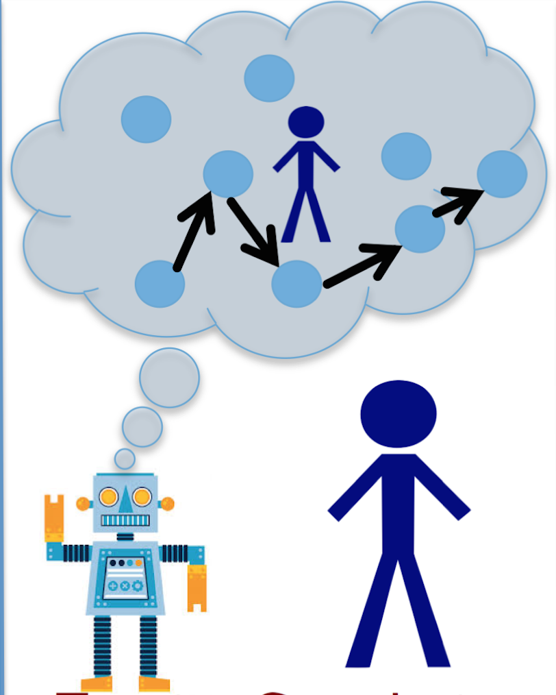

Human Modeling

The tasks in human modeling include enabling automated systems to learn about the humans in terms of
knowledge, capabilities, intents and preferences.
Capability Modeling
One important challenge for a set of agents to achieve more efficient collaboration is for these agents to maintain proper models of each other.
An important aspect of these models of other agents is that they are often not provided,
and hence must be learned from plan execution traces.
As a result, these models of other agents are inherently partial and incomplete.
Most existing agent models are based on action modeling and do not naturally allow for incompleteness.
We introduce a new and inherently incomplete modeling approach based on the representation of capabilities,
which has several unique advantages.
First, we show that the structures of capability models can be learned or easily specified,
and both model structure and parameter learning are robust to high degrees of incompleteness in plan traces
(e.g., with only start and end states partially observed).
Furthermore, parameter learning can be performed efficiently online via Bayesian learning.
While high degrees of incompleteness in plan traces presents learning challenges for traditional (complete) models,
capability models can still learn to extract useful information.
As a result, capability models are useful in applications in which traditional models are difficult to obtain,
or models must be learned from incomplete plan traces,
e.g., robots learning human models from observations and interactions.
Y. Zhang, S. Sreedharan and S. Kambhampati
Capability Models and Their Applications in Planning
International Conference on Autonomous Agents and Multiagent Systems (AAMAS), 2015.
Human-aware Decision Making

The tasks in human-aware decision making are to enable intelligence systems to interact efficiently with humans while considering the human models.
Planning for Serendipity
Recently, there has been a lot of focus on human robot co-habitation issues that are often orthogonal to many aspects of human-robot teaming; e.g. on producing socially acceptable behaviors of robots and de-conflicting plans of robots and humans in shared environments. However, an interesting offshoot of these settings that has largely been overlooked is the problem of planning for serendipity - i.e. planning for stigmergic collaboration without explicit commitments on agents in co-habitation. In this project, we formalize this notion of planning for serendipity for the first time, and provide an Integer Programming based solution for this problem. Further, we illustrate the different modes of this planning technique on a typical Urban Search and Rescue scenario and show a real-life implementation of the ideas on the Nao Robot interacting with a human colleague.
T. Chakraborti, G. Briggs, K. Talamadupula, Y. Zhang, M. Scheutz, D. Smith and S. Kambhampati
Planning for Serendipity
IEEE/RSJ International Conference on Intelligent Robots and Systems (IROS), 2015.
System Evaluation

The tasks in human-aware decision making are to enable intelligence systems to interact efficiently with humans while considering the human models.
Proactive Assistance
It has long been assumed that for effective human-robot teaming,
it is desirable for assistive robots to infer the goals and intents of the humans,
and take proactive actions to help them achieve their goals.
However, there has not been any systematic evaluation of the accuracy of this claim.
On the face of it, there are several ways a proactive robot assistant can in fact reduce the effectiveness of teaming.
For example, it can increase the cognitive load of the human teammate by performing actions that are unanticipated by the human.
In such cases, even though the teaming performance could be improved,
it is unclear whether humans are
willing to adapt to robot actions or are able to adapt in a timely manner.
Furthermore, misinterpretations and delays in goal and intent recognition due to partial observations and limited communication
can also reduce the performance.
In this project, our aim is to perform an analysis of human factors on the effectiveness of such proactive support in
human-robot teaming.
We perform our evaluation in a simulated Urban Search and Rescue (USAR) task,
in which the efficacy of teaming is not only dependent on individual performance
but also on teammates' interactions with each other.
In this task, the human teammate is remotely controlling a robot
while working with an intelligent robot teammate.
Y. Zhang, V. Narayanan, T. Chakraborti and S. Kambhampati
A Human Factors Analysis of Proactive Support in Human-robot Teaming
IEEE/RSJ International Conference on Intelligent Robots and Systems (IROS), 2015.